- Armatex
- Złączki skręcane
- Trójnik do grzałki K604
Trójnik do grzałki Kuterlite K604
Trójnik do grzałki z linii Kuterlite K600: 1 rozmiar (15mm). Zastosowanie: rury miedziane. Wymiary trójników według oznaczeń brytyjskich (UK), jak w cenniku producenta.
- Rozmiary
- 1
- Połączenie
- zaciskowe z pierścieniem
- Producent
- Pegler Yorkshire
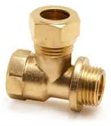
Rozmiary i numery artykułów
Źródło: cennik Kuterlite, październik 2024| Rozmiar | Nr artykułu | Opak. 1 | Opak. 2 | Ilość do zapytania |
|---|---|---|---|---|
| 15mm | 61007K | 5 szt. | 50 szt. |
- Linia
- Kuterlite K600
- Zastosowanie
- rury miedziane
- Nazwa w cenniku
- heater tee, BSP parallel female thread x BSP parallel male thread x copper branch
Zapytaj o wycenę: Trójnik do grzałki K604.
Dodaj rozmiary do listy przyciskiem „Dodaj” albo od razu napisz do nas. Ceny hurtowe, dostępność i terminy przygotujemy w ciągu jednego dnia roboczego.
Inne produkty w linii
Wszystkie linie systemu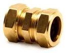
Złączka prostaK610 · 12 rozm.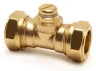
Złączka z odpowietrznikiemK610AC · 2 rozm.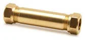
Złączka naprawczaK610BP · 1 rozm.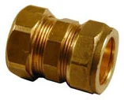
Złączka przejściowa calowa × metrycznaK610IM · 1 rozm.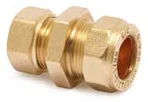
Złączka prosta PE × miedźK1710KP · 1 rozm.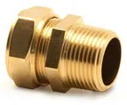
Złączka z GZ (gwint stożkowy)K611 · 15 rozm.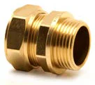
Złączka z GZ (gwint walcowy)K611P · 4 rozm.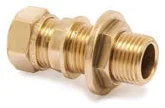
Złączka zbiornikowa długa z GZ (gwint walcowy)K611LB · 2 rozm.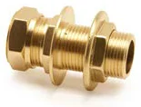
Złączka zbiornikowa długa z GZK611LBPC · 1 rozm.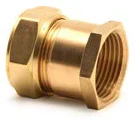
Złączka z GWK612 · 8 rozm.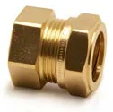
Złączka kranowa z GWK612ST · 3 rozm.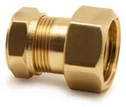
Złączka do zasobnika z nakrętkąK612TN · 1 rozm.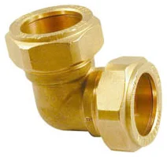
KolanoK615 · 10 rozm.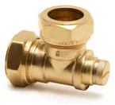
Kolano z odpowietrznikiemK615AC · 2 rozm.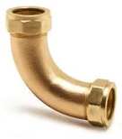
ŁukK615S · 2 rozm.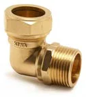
Kolano z GZ (gwint stożkowy)K616 · 5 rozm.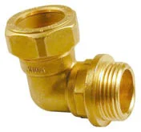
Kolano z GZ (gwint walcowy)K616P · 2 rozm.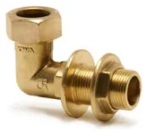
Kolano długie z GZ (gwint walcowy)K616LB · 1 rozm.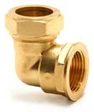
Kolano z GWK617 · 5 rozm.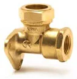
Kolano ścienne z GWK617W · 3 rozm.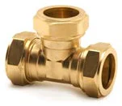
Trójnik równoprzelotowyK618 · 6 rozm.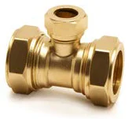
Trójnik z redukcją odejściaK618B · 1 rozm.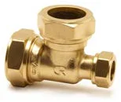
Trójnik redukcyjny (jeden koniec)K618E · 1 rozm.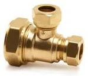
Trójnik redukcyjny (koniec i odejście)K618EB · 2 rozm.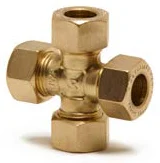
CzwórnikK623 · 2 rozm.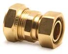
Przyłącze kranowe proste z nakrętkąKS626 · 2 rozm.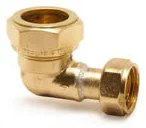
Przyłącze kranowe kątowe z nakrętkąK627 · 1 rozm.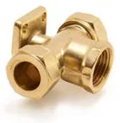
Trójnik ścienny z GWK630W · 1 rozm.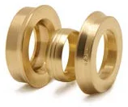
Zestaw redukcyjnyK648 · 4 rozm.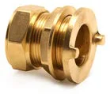
Przyłącze zbiornikowe z kołnierzemKS650 · 3 rozm.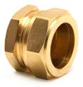
ZaślepkaK651 · 6 rozm.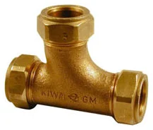
Trójnik łukowyK657 · 2 rozm.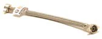
Wąż przyłączeniowy z GWFF25 · 1 rozm.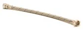
Wąż przyłączeniowy kranowy prostyFF26 · 2 rozm.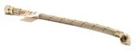
Wąż przyłączeniowy kranowy kątowyFF27 · 1 rozm.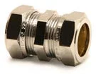
Złączka prosta (chrom)K610CP · 3 rozm.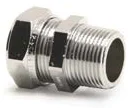
Złączka z GZ (gwint stożkowy) (chrom)K611CP · 3 rozm.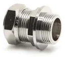
Złączka z GZ (gwint walcowy) (chrom)K611PCP · 1 rozm.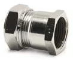
Złączka z GW (chrom)K612CP · 3 rozm.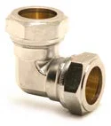
Kolano (chrom)K615CP · 4 rozm.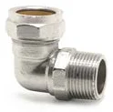
Kolano z GZ (gwint stożkowy) (chrom)K616CP · 2 rozm.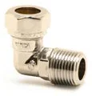
Kolano z GZ (gwint walcowy) (chrom)K616PCP · 1 rozm.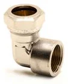
Kolano z GW (chrom)K617CP · 2 rozm.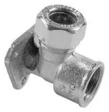
Kolano ścienne z GW (chrom)K617WCP · 1 rozm.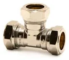
Trójnik równoprzelotowy (chrom)K618CP · 3 rozm.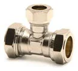
Trójnik z redukcją odejścia (chrom)K618BCP · 1 rozm.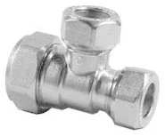
Trójnik redukcyjny (koniec i odejście) (chrom)K618EBCP · 1 rozm.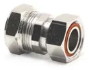
Przyłącze kranowe proste z nakrętką (chrom)K626CP · 2 rozm.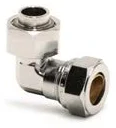
Przyłącze kranowe kątowe z nakrętką (chrom)K627CP · 1 rozm.Zaślepka (chrom)K651CP · 3 rozm.